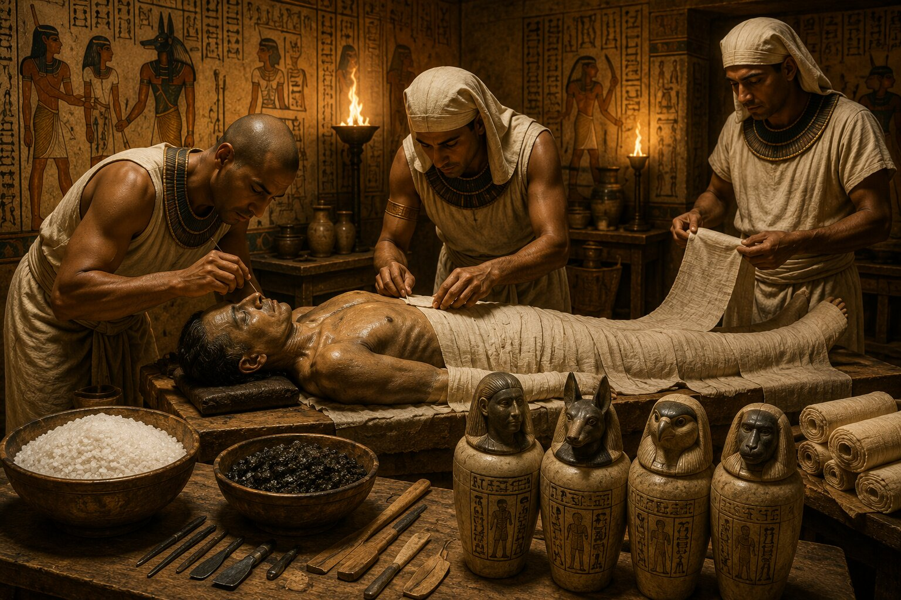
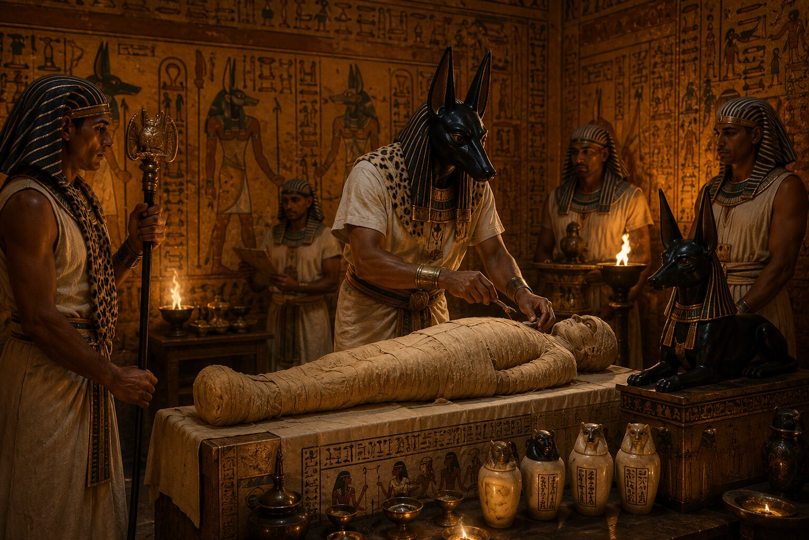
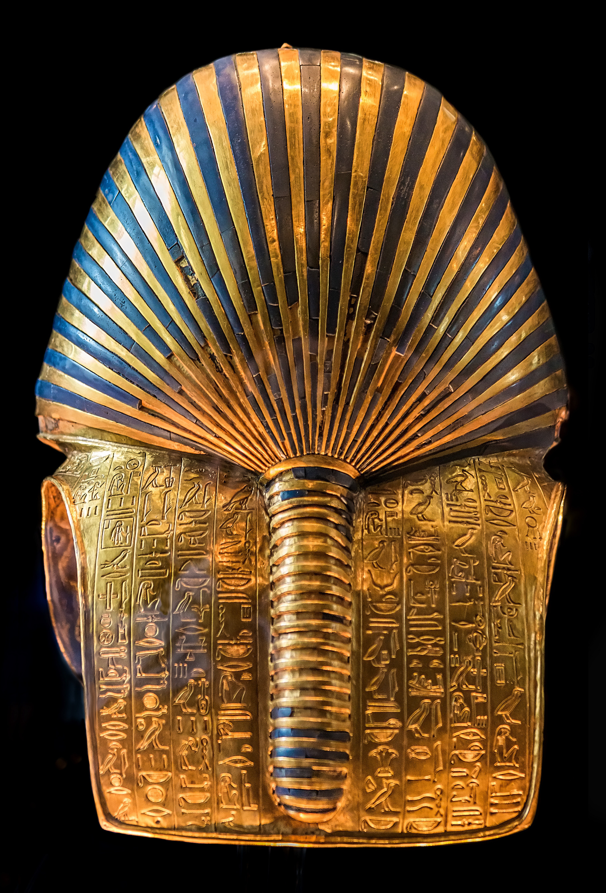

Bir insan öldüğünde bedenine ne olur?
Bugün bu soruya vereceğimiz cevap oldukça nettir. Ölüm, yaşamın sonudur ve beden zamanla doğaya karışır. Ancak Antik Mısırlılar aynı soruya tamamen farklı bir gözle bakıyordu.
Onlara göre ölüm bir son değildi.
Asıl yolculuk ölümden sonra başlıyordu.
Bu yüzden bir insanın bedeni yalnızca korunması gereken bir kalıntı değil, ruhun gelecekteki varlığı için gerekli olan bir araçtı. Eğer beden yok olursa, kişinin ölümden sonraki yaşamı da tehlikeye girebilirdi.
İşte bu düşünce, insanlık tarihinin en dikkat çekici uygulamalarından birini ortaya çıkardı:
Mumyalama.
Bugün müzelerde gördüğümüz binlerce yıllık mumyalar yalnızca arkeolojik kalıntılar değildir. Onlar Antik Mısırlıların ölüm, ruh ve sonsuzluk hakkındaki düşüncelerinin somut bir yansımasıdır.
Peki bir bedenin binlerce yıl bozulmadan kalmasını sağlayan bu süreç nasıl ortaya çıktı? Mısırlılar neden ölülerini korumaya bu kadar önem verdi? Ve mumyalama gerçekten filmlerde gösterildiği kadar gizemli bir işlem miydi?
Bu soruların cevabı bizi Antik Mısır'ın ölüm anlayışının merkezine götürüyor.
Ölüm Mısırlılar İçin Son Değildi
Mumyalamayı anlamanın ilk şartı, Antik Mısırlıların ölüm anlayışını anlamaktır.
Çünkü mumyalama tek başına bir cenaze uygulaması değildi. Aslında çok daha büyük bir inanç sisteminin parçasıydı.
Antik Mısırlılar insanın yalnızca bedenden oluştuğuna inanmıyordu. Onlara göre insanın farklı ruhsal yönleri vardı ve bunların ölümden sonra da varlığını sürdürmesi gerekiyordu.
Özellikle "Ka" ve "Ba" olarak adlandırılan ruhsal unsurlar büyük önem taşıyordu.
Ka, kişinin yaşam gücü olarak görülüyordu. Ba ise kişiliği ve bireysel özellikleri temsil ediyordu. Ölümden sonra bu unsurların yeniden bedeni bulabilmesi gerekiyordu.
İşte sorun da burada ortaya çıkıyordu.
Çölün sıcak ikliminde gömülen bir beden kısa sürede çürüyebilirdi.
Eğer beden yok olursa ruhun geri döneceği bir yer kalmayacaktı.
Bu nedenle bedeni mümkün olduğunca uzun süre korumak, yalnızca fiziksel bir işlem değil, dini bir zorunluluk hâline geldi.
Mumyalama tam da bu ihtiyaçtan doğdu.
Mumyalama Fikri Nasıl Ortaya Çıktı?
İlginç olan şey, mumyalamanın başlangıçta bilinçli bir teknoloji olmamasıdır.
Araştırmacılar, ilk ilhamın doğrudan Mısır çöllerinden geldiğini düşünüyor.
Erken dönemlerde insanlar ölülerini doğrudan çöl kumlarına gömüyordu. Sıcak ve kuru kum, bedenlerdeki nemi hızla çekerek doğal bir koruma sağlıyordu.
Bazı cesetler yıllar sonra çıkarıldığında şaşırtıcı derecede iyi korunmuş durumdaydı.
Muhtemelen Antik Mısırlılar bu durumu gözlemledi.
Doğa kendi kendine bedenleri koruyabiliyorsa, insanlar da bunu bilinçli şekilde yapabilirdi.
Yüzyıllar boyunca bu fikir gelişti.
Basit gömüler yerini daha karmaşık mezarlara bıraktı.
Mezarlar geliştikçe yeni bir sorun ortaya çıktı.
Taş mezarlar çöl kumunun doğal kurutucu etkisini engelliyordu.
Bu nedenle insanlar artık koruma işlemini kendileri yapmak zorundaydı.
Mumyalama sanatı böyle doğdu.
Bir Mumya Nasıl Yapılıyordu?
Bugün mumyalama denildiğinde çoğu kişinin aklına yalnızca sargılar gelir.
Oysa keten bezlere sarma işlemi, uzun ve karmaşık sürecin son aşamalarından yalnızca biriydi.
Profesyonel mumyalayıcılar işe bedenin temizlenmesiyle başlıyordu.
Ardından çürümenin en hızlı başladığı iç organlarla ilgileniliyordu.
Bu aşama oldukça hassastı.
Çünkü amaç bedeni parçalamak değil, onu mümkün olduğunca uzun süre korumaktı.
Karın bölgesinde açılan küçük bir kesiden bazı iç organlar çıkarılıyor ve özel işlemlerden geçiriliyordu.
Karaciğer, mide, bağırsaklar ve akciğerler korunarak ayrı kaplarda saklanıyordu.
Ancak bütün organlar çıkarılmıyordu.
Bir organ özellikle yerinde bırakılıyordu.
Kalp.
Kalp Neden Yerinde Bırakılıyordu?
Modern insan için bu oldukça şaşırtıcı gelebilir.
Bugün düşünme, hafıza ve kişilik gibi özellikleri beyinle ilişkilendiriyoruz.
Antik Mısırlılar ise kalbin insanın özü olduğuna inanıyordu.
Onlara göre kişinin anıları, karakteri, davranışları ve ahlaki yönü kalpte bulunuyordu.
Ölümden sonra ruhun yargılanacağına inanılıyordu.
Bu yargılama sırasında kalp büyük önem taşıyordu.
Ölüler Kitabı'nda anlatılan sahnelere göre kişinin kalbi, adalet ve doğruluk tanrıçası Ma'at'ın tüyüyle tartılıyordu.
Eğer kalp günahlarla ağırlaşmışsa kişi sonsuz yaşamı kazanamıyordu.
Bu nedenle kalbi korumak hayati önem taşıyordu.
Beyin ise aynı değere sahip değildi.
Bu yüzden mumyalama sırasında çoğu zaman çıkarılıyor ve korunmuyordu.
Beyin Nasıl Çıkarılıyordu ve Beden Nasıl Korunuyordu?
Antik Mısır'da mumyalama yalnızca dini bir tören değil, aynı zamanda dikkat çekici bir koruma işlemiydi. Mısırlılar, ölümden sonraki yaşamın devam edebilmesi için bedenin mümkün olduğunca bozulmadan kalması gerektiğine inanıyordu. Ancak insan bedeninin en büyük düşmanı zamandı. Ölümün ardından başlayan çürüme süreci, birkaç hafta içinde bedeni tanınmaz hâle getirebilirdi. Mumyalayıcıların asıl amacı da bu süreci durdurmaktı.
Bu noktada karşılarına çıkan en büyük problem, bedenin içindeki nemdi. Çünkü çürümeye neden olan süreçlerin büyük bölümü suyla bağlantılıydı. Beden ne kadar kuru kalırsa, bozulma da o kadar yavaş oluyordu. Mısırlılar bunu modern biyolojinin açıklayacağı şekilde bilmiyordu elbette, ancak yüzyıllar boyunca edindikleri deneyimler onlara aynı sonuca ulaşmayı öğretmişti.
Bu nedenle mumyalama sırasında bazı iç organlar çıkarılıyor, bedenin içi temizleniyor ve ardından kurutma aşamasına geçiliyordu. Beynin çıkarılması da bu işlemin bir parçasıydı. Bugün kulağa ürkütücü gelse de, Antik Mısırlılar beyni insanın en önemli organı olarak görmüyordu. Onlara göre düşüncenin, hafızanın ve karakterin merkezi kalpti. Bu yüzden kalp korunurken beyin çoğu zaman gerekli görülmüyordu.
Araştırmacılar, beynin genellikle burun yoluyla çıkarıldığını düşünüyor. Bu işlem sırasında ince aletler kullanılıyor ve doku parça parça temizleniyordu. Günümüzde bu yöntem oldukça sıra dışı görünse de, dönemin şartları düşünüldüğünde bedenin dış görünüşünü mümkün olduğunca korumaya yönelik pratik bir çözüm olduğu anlaşılıyor.
Ancak mumyalamanın asıl sırrı organların çıkarılmasında değil, kurutma işlemindeydi. Bunun için "natron" adı verilen doğal bir mineral kullanılıyordu. Nil çevresindeki kurak bölgelerde bulunan bu tuz karışımı olağanüstü bir özelliğe sahipti: Nem çekiyordu. Mumyalayıcılar bedeni natronla kaplıyor ve haftalar boyunca bekletiyordu. Bu süreç sonunda bedenin büyük kısmındaki su kayboluyor, çürüme ciddi ölçüde yavaşlıyordu.
Bugün müzelerde gördüğümüz birçok mumyanın binlerce yıl boyunca korunabilmesinin temel nedeni de budur. Aslında mumyalama, sanıldığı gibi gizemli büyülerden çok dikkatli bir kurutma ve koruma işlemine dayanıyordu. Elbette dini ritüeller önemliydi, ancak bu ritüellerin yanında şaşırtıcı derecede etkili bir fiziksel koruma yöntemi de uygulanıyordu.
Kanopik Kavanozlar ve Organların Yolculuğu
Mumyalama sırasında çıkarılan organlar çöpe atılmıyordu. Antik Mısırlılar için bedenin her parçası ölümden sonraki yaşamla ilişkiliydi ve bu nedenle özel bir şekilde korunmalıydı. Bu düşünce, tarihin en ilginç cenaze uygulamalarından birini ortaya çıkardı: kanopik kavanozlar.
Bu kavanozlar sıradan kaplar değildi. Her biri belirli bir organı korumak için kullanılıyor ve belirli tanrılarla ilişkilendiriliyordu. Karaciğer, mide, bağırsaklar ve akciğerler ayrı ayrı muhafaza ediliyor, daha sonra mezara yerleştiriliyordu. Böylece kişinin ölümden sonraki yaşamda beden bütünlüğünü koruyabileceğine inanılıyordu.
Bu noktada mumyalamanın yalnızca bedeni korumaya yönelik bir işlem olmadığını daha net görebiliyoruz. Antik Mısırlılar için mesele, ölüyü saklamak değildi. Amaç, kişinin öteki dünyadaki varlığını güvence altına almaktı. Bu nedenle mezara bırakılan her nesnenin, yapılan her ritüelin ve söylenen her duanın özel bir anlamı vardı.
İşte bu yüzden bir firavunun mezarına baktığımızda yalnızca bir cenaze töreninin izlerini görmeyiz. Aynı zamanda ölümden sonraki yaşamın ayrıntılı bir planını da görürüz. Mumyalama, bu planın en önemli parçalarından biriydi ve sürecin tamamlanması haftalar hatta aylar sürebiliyordu.
Mumyalama Gerçekten Yetmiş Gün Mü Sürüyordu?
Antik kaynaklarda mumyalama sürecinin yaklaşık yetmiş gün sürdüğüne dair bilgiler bulunur. Araştırmacıların büyük bölümü bu sürenin gerçekçi olduğunu düşünüyor. Çünkü bedenin kurutulması, hazırlanması, sarılması ve cenaze törenlerinin tamamlanması oldukça uzun zaman alıyordu.
Bu süreç yalnızca teknik işlemlerden ibaret değildi. Rahipler dualar okuyor, çeşitli ritüeller gerçekleştiriyor ve ölünün öteki dünyadaki yolculuğuna hazırlanmasını sağlıyordu. Dolayısıyla mumyalama bir laboratuvar işlemi gibi değil, dini ve kültürel bir törenler dizisi olarak görülmelidir.
Beden sonunda keten bezlerle dikkatlice sarılıyor, çeşitli muskalar yerleştiriliyor ve koruyucu metinler ekleniyordu. Antik Mısırlılar için bu son aşama son derece önemliydi. Çünkü artık ölen kişi yalnızca korunmuş bir beden değil, ölümden sonraki yaşam yolculuğuna hazır bir varlık hâline gelmiş oluyordu.
Tam da bu noktada karşımıza Antik Mısır'ın en tanınmış figürlerinden biri çıkıyor. Çakal başlı görünümüyle tanınan ve günümüzde bile Mısır denildiğinde akla ilk gelen tanrılar arasında yer alan Anubis, mumyalama ritüellerinin merkezindeki isimlerden biriydi.
Anubis'in Mumyalamadaki Rolü Neydi?

Bugün Antik Mısır denildiğinde akla gelen ilk figürlerden biri şüphesiz Anubis'tir. Siyah renkli çakal başıyla tasvir edilen bu tanrı, binlerce yıl boyunca ölüm ve cenaze ritüelleriyle ilişkilendirildi. Hatta birçok insan onu doğrudan "ölüm tanrısı" olarak tanır. Ancak Anubis'in görevi bundan biraz daha karmaşıktı.
Antik Mısırlılar için ölüm, karanlık ve korkutucu bir son değildi. Daha çok bir geçiş olarak görülüyordu. Fakat bu geçişin güvenli bir şekilde gerçekleşebilmesi için hem bedenin hem de ruhun korunması gerekiyordu. İşte Anubis tam bu noktada devreye giriyordu.
Mumyalama işlemlerini yöneten rahipler, ritüeller sırasında sıklıkla Anubis'i temsil ediyordu. Bazı törenlerde rahiplerin çakal başlı maskeler taktığına dair tasvirler bulunmuştur. Bu uygulama, yapılan işlemin yalnızca fiziksel değil aynı zamanda kutsal bir görev olarak görüldüğünü gösteriyor.
Anubis'in cenaze ritüellerindeki önemi yalnızca mumyalamayla sınırlı değildi. Mısırlılar onun ölülerin ruhuna yol gösterdiğine ve onları öteki dünyadaki yargıya hazırladığına inanıyordu. Bu nedenle bir kişinin başarılı şekilde mumyalanması, yalnızca bedeninin korunması anlamına gelmiyordu. Aynı zamanda ruhunun da doğru yola yönlendirilmesi gerekiyordu.
Bu düşünce zamanla Antik Mısır'ın en etkileyici ölüm sahnelerinden birinin ortaya çıkmasına neden oldu.
Kalbin Tartılması Töreni
Antik Mısır'ın ölüm anlayışını anlamak isteyen biri için Ölüler Kitabı'nda anlatılan "Kalbin Tartılması" sahnesi büyük önem taşır. Çünkü bu sahne, mumyalamanın neden bu kadar önemli olduğunu da açıklamaktadır.
Mısırlılar ölümden sonra kişinin büyük bir yargılamadan geçtiğine inanıyordu. Bu yargılama sırasında ölen kişinin kalbi, doğruluk ve düzen tanrıçası Ma'at'ın tüyüyle tartılıyordu. Eğer kalp ağır gelirse, kişinin yaşamı boyunca yaptığı kötü davranışlar ortaya çıkmış sayılıyordu. Böyle bir durumda ruh sonsuz yaşama ulaşamıyordu.
Bu nedenle kalbin korunması son derece önemliydi. Daha önce de gördüğümüz gibi, mumyalama sırasında birçok organ çıkarılırken kalbin bedende bırakılmasının temel nedeni buydu. Kalp yalnızca biyolojik bir organ olarak görülmüyordu; kişinin bütün yaşamını taşıyan manevi merkez olarak kabul ediliyordu.
Bu inanç sistemi, mumyalamanın neden sıradan bir cenaze işlemi olmadığını açıkça gösteriyor. Çünkü amaç yalnızca bedeni korumak değil, kişinin ölümden sonraki kaderini güvence altına almaktı.
Herkes Mumyalanabiliyor Muydu?
Bugün müzelerde gördüğümüz görkemli mumyalar bazen yanlış bir izlenim yaratabiliyor. Sanki Antik Mısır'da yaşayan herkes öldüğünde aynı işlemlerden geçiyormuş gibi düşünülebiliyor. Gerçekte ise durum oldukça farklıydı.
Kusursuz bir mumyalama işlemi son derece pahalıydı. Uzman rahipler, özel malzemeler, keten kumaşlar ve uzun süren ritüeller ciddi maliyet gerektiriyordu. Bu nedenle en gelişmiş mumyalama yöntemlerinden genellikle firavunlar, kraliyet ailesi üyeleri ve zengin seçkinler yararlanabiliyordu.
Ancak bu durum sıradan insanların ölümden sonraki yaşama inanmadığı anlamına gelmiyordu. Daha mütevazı yöntemlerle gerçekleştirilen cenaze uygulamaları da vardı. Maddi imkânlar azaldıkça mumyalama işlemi sadeleşiyor, kullanılan malzemeler değişiyor ve ritüeller kısalabiliyordu.
Bu ayrım bize Antik Mısır toplumunun yapısı hakkında da önemli bilgiler verir. Çünkü ölümden sonraki yaşam inancı toplumun her kesiminde bulunmasına rağmen, bu inanca hazırlanma biçimi kişinin sosyal statüsüne göre değişebiliyordu.
Yine de ister bir firavun ister sıradan bir çiftçi olsun, birçok Mısırlı için ortak bir düşünce vardı: Ölüm son değildi. Bu dünyadaki yaşamın ardından yeni bir yolculuk başlıyordu ve beden, bu yolculuğun en önemli anahtarlarından biri olarak görülüyordu.
Belki de bu yüzden bugün binlerce yıl sonra bile mumyalar bize yalnızca geçmişte yaşamış insanların yüzlerini göstermiyor. Aynı zamanda onların umutlarını, korkularını ve sonsuzluk arayışlarını da fısıldıyor.
Mumyalar Hakkında En Yaygın Yanlış Bilgiler
Mumyalar, Antik Mısır'ın en çok bilinen miraslarından biri olmasına rağmen aynı zamanda en çok yanlış anlaşılan konular arasında yer alır. Bunun en büyük nedeni, insanların mumyaları tarih kitaplarından çok filmler, diziler ve popüler kültür aracılığıyla tanımış olmasıdır.
Örneğin birçok kişi Antik Mısır'da yaşayan herkesin öldüğünde mumyalandığını düşünür. Oysa daha önce de gördüğümüz gibi gelişmiş mumyalama işlemleri oldukça maliyetliydi. Firavunlar, soylular ve varlıklı aileler bu sürecin en ayrıntılı biçimlerinden yararlanabiliyordu. Halkın büyük bölümü ise çok daha sade cenaze uygulamalarına sahipti. Bu nedenle bugün müzelerde gördüğümüz görkemli mumyalar, dönemin bütün toplumunu temsil etmez.
Bir başka yaygın yanlış bilgi, Mısırlıların beyni tamamen önemsiz gördüğüdür. Gerçekte durum biraz daha karmaşıktır. Antik Mısırlılar düşüncenin ve kişiliğin merkezinin kalp olduğuna inanıyordu. Bu yüzden kalbi korumaya büyük önem verdiler. Ancak bu durum onların beyni hiç fark etmediği anlamına gelmez. Burada söz konusu olan şey biyolojik bilgi eksikliğinden çok dini inançların önceliğiydi.
Mumyalarla ilgili en popüler efsanelerden biri de lanet hikâyeleridir. Özellikle 1922 yılında Tutankhamun'un mezarının keşfedilmesinden sonra bu tür hikâyeler dünya çapında büyük ilgi gördü. Kazıyla bağlantılı bazı kişilerin yıllar içinde hayatını kaybetmesi, gazetelerde "Firavunun Laneti" başlıklarıyla haberleştirildi. Ancak bilimsel açıdan bakıldığında bu ölümlerin büyük kısmı doğal nedenlerle açıklanabiliyordu. Buna rağmen gizemli hikâyeler, gerçeklerden çok daha hızlı yayıldı.
Belki de en ilginç yanlış anlamalardan biri, mumyaların yalnızca ölüm korkusunun ürünü olduğu düşüncesidir. İlk bakışta bu mantıklı görünse de Antik Mısırlıların bakış açısı farklıydı. Onlar ölümü kaçınılması gereken bir son olarak değil, hazırlanılması gereken bir geçiş olarak görüyordu. Mumyalama bu yüzden ölümden kaçma çabası değil, ölümden sonraki yaşamı güvence altına alma girişimiydi.
Bu ayrıntı önemlidir. Çünkü mumyaları anlamak için onları modern dünyanın gözünden değil, Antik Mısır'ın inanç sistemi içinden değerlendirmek gerekir. Aksi hâlde karşımıza yalnızca sargılara sarılmış bedenler çıkar. Oysa o sargıların altında binlerce yıllık bir dünya görüşü saklıdır.
Tarihin En Ünlü Mumyaları


Bugün dünya üzerinde milyonlarca insan Tutankhamun adını biliyor. Bunun nedeni onun en güçlü firavun olması değil. Aslında genç yaşta ölen bu hükümdar, birçok açıdan kendisinden önce ve sonra gelen büyük firavunların gölgesinde kalmıştır. Onu özel yapan şey mezarının büyük ölçüde bozulmadan keşfedilmiş olmasıdır.
1922 yılında Howard Carter tarafından bulunan mezar, arkeoloji tarihinin en önemli keşiflerinden biri olarak kabul edilir. İçeride bulunan altın maskeler, mücevherler, günlük kullanım eşyaları ve cenaze ekipmanları yalnızca bir firavunun zenginliğini değil, Antik Mısır'ın ölüm anlayışını da gözler önüne serdi.
Ancak Tutankhamun tek önemli mumya değildir. II. Ramses de günümüze ulaşan en dikkat çekici mumyalardan biridir. Yaklaşık doksan yıl yaşadığı düşünülen bu hükümdar, Antik Mısır'ın en güçlü firavunları arasında yer alır. Bugün mumyası incelendiğinde saçlarından kemik yapısına kadar birçok ayrıntı hakkında bilgi edinilebilmektedir.
Aslında modern teknoloji sayesinde mumyalar yalnızca geçmişin kalıntıları olmaktan çıktı. Bilgisayarlı tomografi ve DNA analizleri gibi yöntemler, araştırmacıların binlerce yıl önce yaşamış insanların sağlık durumlarını, beslenme alışkanlıklarını ve hatta bazı hastalıklarını incelemesine olanak tanıyor.
Bu nedenle bir mumya yalnızca korunmuş bir beden değildir. Aynı zamanda geçmişe açılan bir arşivdir.
Sonuç: Ölüleri Korumaktan Daha Fazlası
Mumyalama çoğu zaman teknik bir işlem gibi anlatılır. Organların çıkarılması, bedenin kurutulması ve keten bezlere sarılması sürecin görünen kısmıdır. Ancak Antik Mısır açısından bakıldığında bunların hiçbiri tek başına anlam taşımaz.
Mumyalama, ölümden sonraki yaşam inancının bir sonucuydu. Mısırlılar bedenin korunmasının ruhun yolculuğu için gerekli olduğuna inanıyordu. Bu nedenle bir mumya yalnızca bir ceset değil, sonsuz yaşama hazırlanmış bir insan olarak görülüyordu.
Belki de bu yüzden binlerce yıl sonra bile mumyalar insanları etkilemeye devam ediyor. Çünkü onlar yalnızca geçmişte yaşamış insanların kalıntıları değil; insanlığın ölüm karşısında verdiği en sıra dışı cevaplardan birinin temsilcileri.
Bugün bir müzede bir mumyanın yüzüne baktığımızda aslında yalnızca Antik Mısır'a değil, insanların ölümsüzlük arzusuna da bakıyoruz. Ve bu arzu, aradan geçen binlerce yıla rağmen hâlâ değişmiş değil.
Antik Mısırlıların ölümden sonraki yaşam için hazırladıkları yapılar da aynı inancın ürünüydü. Mısır piramitleri, firavunların bu sonsuz yolculuğa çıkmaları için inşa edilen devasa anıtlardı ve mumyalama bu yolculuğun en önemli hazırlık aşamasıydı.
Sık Sorulan Sorular
Antik Mısır'da mumyalama neden yapılıyordu?
Mısırlılar, bedenin korunmasının ölümden sonraki yaşam için gerekli olduğuna inanıyordu. Bu nedenle çürümeyi yavaşlatmak amacıyla mumyalama uygulanıyordu.
Mumyalama kaç gün sürüyordu?
Antik kaynaklara göre süreç yaklaşık yetmiş gün sürüyordu. Bu süre içinde beden kurutuluyor, hazırlanıyor ve cenaze ritüelleri gerçekleştiriliyordu.
Beyin neden çıkarılıyordu?
Mısırlılar kalbi düşüncenin ve kişiliğin merkezi olarak gördükleri için kalbi koruyor, beyne aynı önemi vermiyorlardı.
Kalp neden bedende bırakılıyordu?
Çünkü ölümden sonraki yargılama sırasında kişinin kalbinin tartıldığına inanılıyordu.
Herkes mumyalanabiliyor muydu?
Hayır. En gelişmiş mumyalama yöntemleri genellikle firavunlar ve varlıklı kişiler için uygulanıyordu.
Anubis'in mumyalamadaki görevi neydi?
Anubis, cenaze ritüelleri ve mumyalamayla ilişkilendirilen tanrıydı. Ölülerin ruhuna rehberlik ettiğine inanılıyordu.
Kaynakça
- Assmann, Jan. Death and Salvation in Ancient Egypt. Cornell University Press, 2005.
- Ikram, Salima. Death and Burial in Ancient Egypt. Longman, 2003.
- Ikram, Salima & Dodson, Aidan. The Mummy in Ancient Egypt: Equipping the Dead for Eternity. Thames & Hudson, 1998.
- Taylor, John H. Death and the Afterlife in Ancient Egypt. University of Chicago Press, 2001.
- David, Rosalie. Religion and Magic in Ancient Egypt. Penguin Books, 2002.
- Brier, Bob. Egyptian Mummies: Unraveling the Secrets of an Ancient Art. HarperCollins, 1994.
- British Museum – Ancient Egyptian Mummification Research Archive.
- The Metropolitan Museum of Art – Egyptian Funerary Practices Collection.
- University College London (UCL) – Digital Egypt for Universities Project.